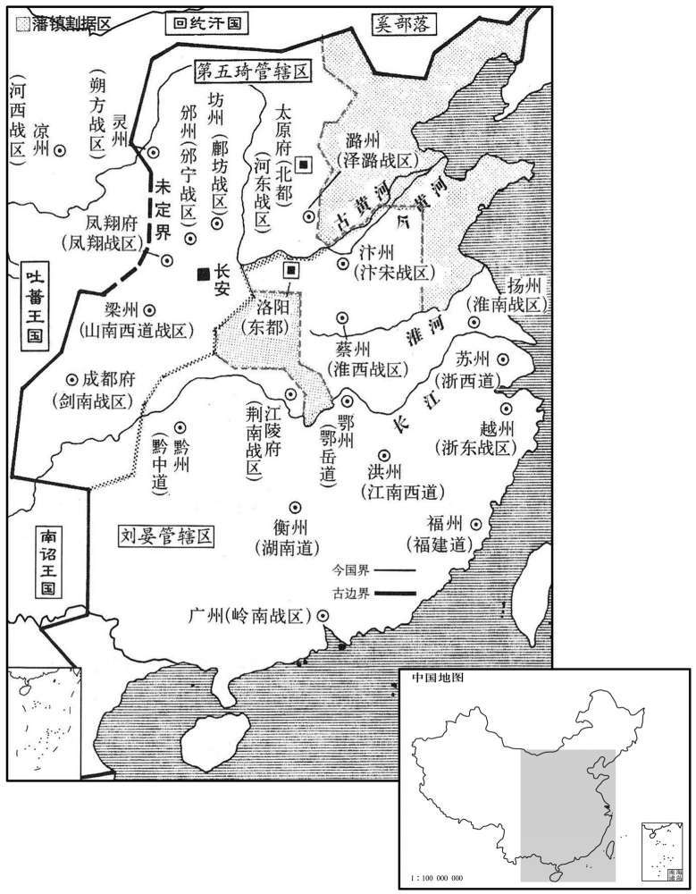

公元766年资治通鉴：本年记事、原文与白话对照
按原书编年位置阅读；追叙和史论不等于本年发生的事件。白话采用所据译本，缺译不以生成译文补齐。
卷224 · 本年记事
公元766年 · 唐代宗睿文孝武皇帝大历元年
大历元年〔（丙午，七六六）是年十一月，方改元。〕
本年事件索引（现代整理）
- 代宗下诏恢复国子监学生名额
- 刘晏、第五琦分区掌管天下财赋
- 周智光骄横不法，聚众劫掠漕运与使者
- 代宗亲临国子监举行释奠并命官员听讲
- 代宗命有关部门修缮国子监
- 元载奏请百官进言须先经长官宰相审定
- 颜真卿反对限制言路，被元载贬为峡州别驾
- 代宗命杨济出使吐蕃修好
- 杜鸿渐任副元帅前往平定蜀乱
- 代宗命马璘兼任邠宁节度使，段秀实协助整军
- 张献诚与崔旰交战大败，旌节被夺
- 杨休明将河西节度使治所迁至沙州
- 国子监修复落成，鱼朝恩登座讲经讥讽宰相
- 杜鸿渐入蜀后委政崔旰并推荐其任节度使
- 代宗任鱼朝恩为内侍监兼判国子监事
- 黎干引南山水入渠未能成功
- 诸道节度使向代宗进献丰厚生日礼物
- 第五琦什一税加重民困，代宗下诏停止
- 周智光杀监军张志斌并扬言挟天子令诸侯
- 郭子仪亲自耕种河中百亩以保障军粮
- 陈少游因贿赂权贵迅速改任宣歙观察使

本年形势与背景参考图
春，正月，乙酉，敕复补国子学生。
春季，正月乙酉（二十九日），代宗下敕重新补充国子监学生。
丙戍，以户部尚书刘晏为都畿、河南、江南、湖南、荆南、山南东道转运、常平、铸钱、盐铁等使，侍郎第五琦为京畿、关内、河东、剑南、山南西道转运等使，分理天下财赋。
丙戌（三十日），代宗任命户部尚书刘晏为都畿道、河南道、淮南道、江南道、湖南道、荆南道、山南东道转运使、常平使、铸钱使、盐铁使等，侍郎第五琦为京畿道、关内道、河东道、剑南道、山南西道转运使等职务，分别管理国家的财政赋税。
周智光至华州，〔周智光还华州，见上卷上年。〕益骄横，〔横，户孟翻。〕召之，不至，上命杜冕从张献诚于山南以避之；智光遣兵于商山邀之，不获。智光自知罪重，乃聚亡命、无赖子弟，众至数万，纵其剽掠以悦其心，〔剽，匹妙翻。〕擅留关中所漕米二万斛，藩镇贡献，往往杀其使者而夺之。
周智光回到华州后，更加飞扬跋扈，代宗召见，他也不去。代宗让杜冕跟随张献诚到山南躲避周智光。周智光派遣军队在商山拦截杜冕，但没有得到。周智光自知罪孽深重，便纠集亡命之徒、无赖子弟，其众多达数万，纵容他们烧杀虏掠以博取他们的欢心。又擅自截留漕运到关中的大米二万斛。对于各藩镇向朝廷贡献的方物，周智光常常杀掉使者而夺取之。
二月，丁亥，释奠于国子监。〔唐制：中春、中秋释奠于文宣王，皆以上丁戊〔日﹖〕，以祭酒、司业、博士三献。〕命宰相帅常参官、〔常参官，常朝日常赴朝参者也。唐制，文宣五品以上及两省供奉官、监察御史、员外郎、太常博士日参，号常参官。武官三品以上三日一，号九参官。五品以上及新行〔折冲〕当番者五日一朝，号六参官。弘文、崇文馆、国子监学生四时参。凡诸王入朝及以恩追至者日参。其文武官职事九品以上及二王后，则朝朔望而已。帅，读曰率；下同。相息亮翻。〕鱼朝恩帅六军将往听讲，〔朝，直遥翻。将，即亮翻。〕子弟皆服朱紫为诸生。朝恩即贵显，乃学讲经为文，仅能执笔辨章句，遽自谓才兼文武，人莫敢与之抗。
二月丁亥朔（初一），代宗在国子监举行释奠礼。代宗下令宰相率领常参官、鱼朝恩率领六军将领前往国子监听讲儒家经典，他们的子弟都穿紫红衣服作为学生。鱼朝恩已经尊贵显赫，便学习讲演经典，撰述文章。他仅能执笔识读章句，就马上自称是文武全才，别人都不敢与他争辩。
辛卯，命有司修国子监。
辛卯（初五），代宗下令有关部门维修国子监。
元载专权，恐奏事者攻其私，〔载，祖亥翻，又如字。讦，居谒翻。〕乃请：「百官凡论事，皆先白长官，长官白宰相，然后奏闻。」仍以上旨谕百官曰：「比日诸司奏事烦多，所言多谗毁，〔长，知两翻。比，毗至翻。〕故委长官、宰相先定其可否。」
元载大权独揽，害怕上奏论事者揭露他私揽大权，就奏请说：“百官如果有事论奏，都应当先告诉有关部门长官，由各长官告诉宰相，然后再奏报陛下。”他还以圣旨的名义告诉百官说：“近来，各有关部门上奏论事繁多，所说的多是谗言诋毁之词，所以委托诸长官、宰相首先确定所说的事是否可以上奏。”
刑部尚书颜真卿上疏，以为：「郎官、御史，陛下之耳目。〔尚，辰羊翻。上，时掌翻。疏，所据翻。郎官者，尚书省曹二十四司郎官。御史者，御史台三院御史。〕今使论事者先白宰相，是自掩其耳目也。陛下患群臣之为谗，何不察其言之虚实！若所言果虚宜诛之，果实宜赏之。不务为此，而使天下谓陛下厌听览之烦，托以为辞以塞谏争之路，臣窃为陛下惜之！〔塞，昔则翻。争，读曰诤。为，于伪翻。〕太宗着门司式云：〔唐式三十三篇，以尚书省诸曹及秘书、太常、司农、光禄、太府、太仆、少府及监门、宿卫、计帐、为其篇目。〕『其无门籍人，有急奏者，皆令门司与仗家引奏，〔唐制：门籍，流内记官爵、姓名、流外记年齿、状貌。月一易其籍，非迁解不除。无门籍者，有急奏，则令门司与仗家引奏。仗家，宿卫五仗之执事者。令，力丁翻。〕无得关碍。』所以防壅也。天宝以后，李林甫为相，深疾言者，道路以目。上意不下逮，下情不上达，蒙蔽喑呜，〔史照曰：喑呜，语喑哑不明。〕卒成幸蜀之祸。〔卒，子恤翻。〕陵夷至于今日，其所从者渐矣。夫人主大开不讳之路，群臣犹莫敢尽言，况令宰相大臣裁而抑之，则陛下所闻者不过三数人耳。天下之士从此钳口结舌，陛下见无复言者，以为天下无事可论，是林甫复起于今日也！昔林甫虽擅权，群臣有不谘宰相辄奏事者，则托以他事阴中伤之，〔复，扶又翻。中，竹仲翻。〕犹不敢明令百司奏事皆先白宰相也。陛下傥不早寤，渐成孤立，后虽悔之，亦无及矣！」载闻而恨之，奏真卿诽谤；乙未，贬峡州别驾。〔峡州，夷陵郡。旧志：京师东南一千四百八十八里。〕
刑部尚书颜真卿上疏认为：“郎官和御史都是陛下的耳目。如今让上奏论事者先告诉宰相，是陛下自己堵塞自己的耳目。陛下如果害怕大臣进谗言，为什么不观察他们所言的真假！假如所言如果是假，那就应该将他们杀掉；如果是真，那就应当奖赏他们。如果陛下不致力做到这一步，就会使天下人说陛下对听览臣下奏章感到厌烦，以此为借口，堵塞臣下劝谏争辩的途径，我为陛下感到惋惜！太宗所著《门司式》说：‘那些没有出入宫门凭证的人，如有急事上奏，都命令掌管宫门的人和执掌仪仗宿卫的人引导上奏，不许阻挠。’这是为了避免雍塞蒙蔽。天宝以后，李林甫担任宰相，非常讨厌上奏论事的人，人们敢怒而不敢言。致使皇上的意图不能向下传达，而下面的情况皇上不能了解。皇上被蒙蔽，臣下缄口不言，终于酿成玄宗逃奔蜀地的大祸。国家衰败到今天这种地步，有它深远的根源。皇上大开直言不讳之路，大臣尚且不敢完全讲话，更何况让宰相大臣先行裁决和压制，那么陛下所能听到和看到的人不过三几个了。天下的有识之士从此沉默不语，陛下看到无人再上奏论事，就会认为天下没有可论的事情，这真像李林甫在今天又复活了似的！过去李林甫虽然大权独揽，大臣中仍有不征求宰相意见而上奏论事的，对此，李林甫仅能借口其他事，暗中伤害他们，尚且不敢明目张胆地下令各有关部门上奏论事都必须先告诉宰相。陛下倘若不及早醒悟，就会逐渐孤立，过后虽然心中懊悔，也来不及了！”元载听到颜真卿上疏很恨他，奏称颜真卿诽谤。乙未（初九），代宗将颜真卿贬为峡州别驾。
己亥，命大理少卿杨济修好于吐蕃。〔少，始照翻。好呼到翻。吐，从暾入声。〕
己亥（十三日），代宗命令大理少卿杨济与吐蕃建立友好关系。
壬子，以杜鸿渐为山南西道‧剑南东‧西川副元帅、剑南西川节度使，以平蜀乱。〔崔旰之乱也。帅，所类翻。使，疏吏翻。〕
壬子（二十六日），代宗任命杜鸿渐为山南西道、剑南东川、剑南西川副元帅，剑南西川节度使，以平定蜀地的叛乱。
以四镇、北庭行营节度使马璘兼邠宁节度使。璘以段秀实为三使都虞候，〔三使，四镇一也，北庭二也，邠宁三也。〕卒有能引弓重二百四十斤者，〔考异曰：旧传作「能引二十四弓」。今从段别传。〕犯盗当死，璘欲生之，秀实曰：「将有爱憎而法不一，虽韩、彭不能为理。」璘善其议，竟杀之。璘处事或不中理，〔处，昌吕翻。中，竹仲翻。〕秀实力争之。璘有时恕甚，左右战栗，秀实曰：「秀实罪若可杀，何以恕为！无罪杀人，恐涉非道。」璘拂衣起，秀实徐步而出：良久，璘置酒召秀实谢之。自是军州事皆咨秀实而后行。璘由是在邠宁，声称殊美。〔称，尺正翻。〕
唐代宗让四镇、北庭行营节度使马兼任宁节度使。马让段秀实担任四镇、北庭和宁三节度使都虞候。马部下有一士兵，能拉开二百四十斤重的弓，因盗窃该当处死，而马想免他死罪，段秀实对马说：“将领有爱憎之情，就会执法不一，即使是韩信、彭越也无法治理军队。”马对段秀实的议论颇为赞赏，终于杀掉那个士兵。有时，马处理事情不合理，段秀实就据理力争。有时马十分恼怒，身边的人吓得胆战心惊，段秀实说：“如果我犯了应该杀头的罪，你何必大发雷霆！杀死无罪的人，恐怕是无道的。”马气得拂衣而起，段秀实则慢慢地走了出去，过了很久，马摆酒召见段秀实，以示谢罪。从此，凡军州中事，马都征求段秀实意见然后施行。因此，马在宁的名声非常好。
癸丑，以山南西道节度使张献诚兼剑南东川节度使，邛州刺史柏茂琳为邛南防御使；〔邛南，邛水以南也。邛水出严道邛崃山，入青衣江。〕以崔旰为茂州刺史，充西山防御使。三月，癸未，献诚与旰战于梓州，献诚军败，仅以身免，旌节皆为旰所夺。
癸丑（二十七日），代宗任命山南西道节度使张献诚兼任剑南东川节度使，邛州刺史柏茂琳为邛南防御使，崔旰为茂州刺史，担任西山防御使。三月癸未（二十八日），张献诚在梓州与崔旰交战，张献诚兵败，仅免身死，节度使的旌节都被崔旰夺走。
夏，五月，河西节度仗杨休明徙镇沙州。〔凉州沦陷故也。〕
夏季，五月，河西节度使杨休明将治所迁移到沙州。
秋，八月，国子监成；丁亥，释奠。〔记文王世子：凡始立学者，必释奠于先圣先师。考之郑注，凡学，四时皆有释奠。释奠者，设荐馔酌奠而巳，无迎尸以下之事。记又曰：始立学者，即衅器，用币，然后释菜，不舞，不授器。注云：释菜，礼轻也。释奠则舞，舞则授器。司马之属，司兵、司戈、司盾。祭祀，授舞者兵也。周礼大胥：春入学，释菜，合舞。注云：合舞，等其进退。郑司农云：舍菜，谓舞者皆持芬香之菜。秦、汉释奠无文。魏则以太常行事，晋、宋以学官主祭。南齐武帝时，有司奏释奠先圣先师，礼文又有释菜，未详今当行何礼，用何乐﹖时从喻希议，用元嘉故事，设轩悬之乐，六佾之舞，牲牢器用悉依上公。梁及北齐，车驾视学，皆亲释奠。唐春、秋释奠，三献皆以学官。太宗贞观十四年，亲释奠于国学。玄宗开元十一年，诏春、秋释奠，用牲牢。〕鱼朝恩执易升高座，讲「鼎覆餗」以讥宰相。〔易曰：鼎折足，覆公餗。言三公鼎足承君，苟非其人，则折足而覆乱美实。餗，音桑谷翻，鼎实也。〕王缙恕，元载怡然。〔考异曰：是时缙留守东都而得预此会者。按实录，明年二月，郭子仪入朝，诏元载、王缙等宴于其第。然则虽守东都，有时朝京师也。〕朝恩谓人曰：「恕者常情，笑者不可测也。」
秋季，八月，国子监修复完毕。丁亥（初四），在国子监行释奠礼。鱼朝恩手执《易经》，坐于高座，宣讲《易经》中所说的：“鼎折一足，鼎中美食就会倾覆，”以此来讽刺宰相。王缙十分气愤，而元载和颜悦色，十分坦然。鱼朝恩跟别人说：“发怒是常情，而微笑则是不可揣测的。”
杜鸿渐至蜀境，闻张献诚败而惧，使人先达意于崔旰，许以万全。旰卑辞重赂以迎之，鸿渐喜；进至成都，见旰，但接以温恭，无一言责其干纪，〔【章：十二行本「纪」下有「日与将佐高会」六字；乙十一行本同；退斋校同。】〕州府事悉以委旰。又数荐之于朝，因请以节制让旰，〔数，所角翻。〕以柏茂琳、李昌乡各为本州岛刺史。上不得已从之。〔杜鸿渐习知朝廷之务姑息，故敢以崔旰等请。〕壬寅，以旰为成都尹、西川节度行军司马。〔崔旰遂据有西川。〕
杜鸿渐到达蜀地境内，听说张献诚兵败，感到很害怕，他派人先去崔旰致意，保证让他不受伤害。崔旰以谦辞重礼迎接他，杜鸿渐很高兴。到达成都，见了崔旰，仅以温和恭谦的态度进行接触，没有说一句责备他违反法纪的话，将州府事务全部委托崔旰处理。杜鸿渐又多次向朝廷推荐崔旰，而且请求朝廷将节度使职位让给崔旰，让柏茂琳、杨子琳、李昌分别担任本州刺史。代宗不得已，只好同意他的建议。壬寅（十九日），代宗任命崔旰为成都尹、西川节度行军司马。
甲辰，以鱼朝恩行内侍监、判国子监事。中书舍人京兆常衮上言：「成均之任，当用名儒，〔五帝名学曰成均。垂拱元年，改国子监曰成均，义取此也。寻复其旧。常衮谓国子监为成均，亦犹今人言太学为辟雍耳。〕不宜以宦者领之。」丁未，命宰相以下送朝恩上。〔上，时掌翻。〕
甲辰（二十一日），代宗任命鱼朝恩为内侍监，兼管国子监事务。中书舍人京兆人常衮上书说：“国子监的官员应当起用名儒，不应该让宦官兼任。”丁未（二十四日），代宗命令宰相以下各级官员送鱼朝恩上任。
京兆尹黎干自南山引涧水穿漕渠入长安，功竟不成。
京兆尹黎干从南山引涧水穿漕渠进入长安，这项工程最终未能成功。
冬，十月，乙未，上生日，〔开元十四年十月十三日上生，以其日为天兴圣节。〕诸道节度使献金帛、器服、珍玩、骏马为寿，共直缗钱二十四万。常衮上言，以为：「节度使非能男耕女织，必取之于人。敛怨求媚，不可长也。〔长，知两翻。〕请却之。」上不听。
冬季，十月乙未（十三日），代宗生日，各道节度使贡献黄金玉帛、器物衣服、珍贵的玩赏物品和骏马作为寿礼，价值为缗线二十四万。常衮向代宗进言，认为：“节度使不会男耕女织，这些财物必然从人民榨取。敛民招怨讨好陛下，这种风气决不可助长。请求陛下不要接受这些寿礼。”代宗不听。
京兆尹第五琦什一税法，民苦其重，多流亡。十一月，甲子，日南至，赦，改元，〔改元大历。〕悉停什一税法。〔行什一税，见上卷上年。〕
京兆尹第五琦实行十中取一的税制，民众颇受税重之苦，许多人流亡他乡。十一月甲子（十二日），冬至日，大赦天下，改年号为大历，十中取一的税制全部停用。
十二月，癸卯，周智光杀陕州监军张志斌。〔斌，音彬。〕智光素与陕州刺史皇甫温不协，志斌入奏事，智光馆之，〔自陕州入奏事，道过华州。馆，古玩翻。〕志斌责其部下不肃，智光恕曰：「仆固怀恩不反，正由汝辈激之。我亦不反，今日为汝反矣！」〔为，于伪翻。〕叱下斩之，脔食其肉。〔史照曰：脔切其肉以食也。〕朝士举选人，畏智光之暴，多自同州窃过，〔选，须绢翻。〕智光遣将将兵邀之于路，死者甚众。〔将，即亮翻。〕戊申，诏加智光检校左仆射，遣中使余元仙持告身授之。智光慢骂曰：「智光有大功于天下国家，不与平章事而与仆射！且同、华地狭，不足展材，若益以陕、虢、商、鄜、坊五州，庶犹可耳。」因历数大臣过失，〔数，所具翻。〕且曰：「此去长安百八十里，智光夜眠不敢舒足，恐踏破长安城，至于挟天子令诸侯，惟周智光能之。」元仙股栗。郭子仪屡请讨智光，上不许。
十二月癸卯（二十二日），周智光杀陕州监军张志斌。周智光一向与陕州刺史皇甫温不和，张志斌入朝奏报事务，周智光将他留居馆舍，张志斌入朝奏报事务，周智光将他留居馆舍，张志斌责备周智光部下不守纪律，周智光愤怒地说：“仆固怀恩本来不造反，正是由于你这一类人激怒他。我也没有造反，今天却因你而造反了！”叱令左右将张志斌推下去斩首，将他剁成肉片吃掉。朝廷官员推举的候选官员，都畏惧周智光的残暴，大多数从同州悄悄经过，周智光派遣将领率兵在路途中阻截，被杀死的人很多。戊申（二十七日），代宗下诏将周智光晋升为检校左仆射，派遣中使余元仙携带告身去授予周智光。周智光谩骂道：“我周智光对国家有特大功劳，不给平章事而给仆射的职位！况且同州、华州地方狭小，不足以施展我的才能，假如给我增加陕州、虢州、商州、州、坊州等五州，那样还差不多。”因而历数大臣们的过失，并且说道：“这里距长安一百八十里地，我晚上睡觉不敢伸展双足，害怕踏破长安城。至于挟天子以令诸侯，只有周智光才能办到。”余元仙吓得双腿直颤。郭子仪屡次请求讨伐周智光，代宗没有允许。
郭子仪以河中军食常乏，乃自耕百亩，将校以是为差，于是士卒皆不劝而耕。是岁，河中野无旷土，军有余粮。〔史言郭子仪忠勤为国。〕
郭子仪因为河中军队的食粮经常匮乏，于是亲自耕地一百亩，将领们依此定出等级，因此士兵们都无需劝导而从事农耕。本年，河中地区没有闲置的土地，军队也存有余粮。
以陇右行军司马陈少游为桂管观察使。〔桂管领桂、昭、贺、富、藤、梧、〔容〕潘、白、廉、绣、钦、横、邕、融、柳、贵十七州。刘昫曰：桂管十五州，在广州西：桂、昭、富、梧、蒙、龚、浔、郁林、平琴、绣、象、柳、融。〕少游，博州人也，为吏强敏而好贿，〔好，呼到翻。〕善结权贵，以是得进。即得桂州，恶其道远多瘴疠；〔恶，乌路翻。〕宦董秀掌枢密，〔是后遂以中官为枢密使。〕少游请岁献五万缗，又纳贿于元载子仲武。内外引荐，〔董秀引荐于内，元载引荐于外。〕数日，改宣歙观察使。〔宋白曰：干元元年，停采访使及诸道黜陟使，置观察处置使。其年，李峘除都督江淮节度，宣慰、观察、处置使。今按李峘之任重矣，陈少游止观察一二州或数州，其任在节度使下。〕
代宗任命陇右行军司马陈少游为桂管观察使。陈少游是博州人，做官机敏强干，又喜欢贿赂，善于结交权贵，因此得以升官。陈少游已经得到桂州，但他讨厌桂州路途遥远，而又多传染病。当时宦官董秀执掌枢密事务，陈少游请求每年献给董秀五万缗钱，又向元载的儿子元仲武行贿。于是董秀和元载分别内外向代宗引荐陈少游。几天以后，代宗改任陈少游为宣歙观察使。